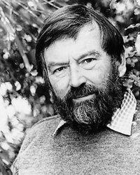

Джон Фаулз
Роки життя: 1926−2005
Читати:
«Маг» (скорочено)
«Колекціонер» (скорочено)
Фаулз народився у містечку Лі-Он-Сі, що у графстві Ессекс. Навчався в елітній школі у Бедфорді, згодом служив у Королівському флоті у морській піхоті. Після Другої світової війни продовжив освіту у Нью-коледжі Оксфордського університету, де спеціалізувався в царині романо-германської філології. Викладав англійську мову та літературу у Франції, Греції, Англії й облишив педагогічну діяльність лише у 1963 p., коли успіх першого опублікованого роману «Колекціонер» («The Collector») дозволив йому цілковито віддатися творчості. Тоді Фаулзу було вже майже сорок років, він мав ґрунтовний життєвий досвід, його погляди сформувалися, а політичні симпатії визначилися. Він був переконаним супротивником англійських консерваторів, йому були близькі погляди лейбористів (особливо їхнього «лівого» крила). Фаулз називав себе «соціальним демократом», прибічником «англійського соціалізму», за відродження якого він і висловлювався, маючи на увазі (і в цьому його погляди збігалися з позицією Дж.Б. Шоу), що капіталізм неминуче виснажить, переживе себе, а система продуманих реформ може сприяти цьому процесові. Фаулз підтримував рух «зелених», що виступають за збереження природного довкілля. У своїх естетичних принципах він орієнтувався на класичні традиції, високо цінував реалістичне мистецтво, вважав його зв'язок із життям непроминущою вартістю, хоча у власній літературній творчості аж ніяк не дотримується традиціоналістських кліше, органічно поєднуючи свою відданість класиці зі сміливими художніми експериментами.
Гуманізм є наріжним каменем світоглядних і творчих позицій письменника. Фаулз вважав, що література повинна сприяти духовному вдосконаленню людини, бути серйозною і гуманною. Він надавав великого значення етичному компонентові у творчості. Критики й про самого Фаулза пишуть як про письменника, який втілив у своїх творах етичні норми кращих зразків світової літератури. Працюючи в різних жанрах, Фаулз найповніше виявив самобутність свого таланту як романіст. Романний жанр він цінував і як «можливість виразити свій погляд на життя», і як форму впливу на духовне та моральне життя суспільства.
Після «Колекціонера» у 60-х pp. побачили світ такі романи Фаулза: «Маг» («The Magus», 1965), «Жінка французького лейтенанта» («The French Lieutenant's Woman», 1969). До цього ж періоду належить і книга «Арістос» («The Aristos», 1964), у якій Фаулз ділиться своїми думками та міркуваннями з проблем філософії, мистецтва, етики. Це своєрідний «автопортрет митця», який дозволяє читачеві познайомитися з широким колом питань, що хвилювали письменника. У цій книзі Ф. висловлює думку про те, що основою творчості повинна бути чітка філософська та естетична концепції. В оновленій редакції книга «Арістос» була перевидана у 1980 р. Протягом 70-х pp. Фаулз видав романи «Вежа з чорного дерева» («The Ebony Tower», 1974) та «Деніел Мар-m(H»(«Daniel Martin», 1977), у 80-хpp. побачили світ «Мантиса» («Mantissa», 1983) і «Хробак» («A Maggot», 1986).
Серед багатьох шедеврів світової літератури Фаулз з особливим пієтетом ставився до «Одіссеї» Гомера та «Бурі» В. Шекспіра. Про це він пише в есе «Острови». «Одіссея», цей перший роман в історії людства, містить у собі вічні теми — подорожі теренами життя і мандри глибинами власного «я», тему пошуку і прагнення до пізнання довкілля. Шекспірівську «Бурю» Фаулз сприймає як п'єсу про перемогу істинної культури над бездуховністю, шляхетності і порядності — над фальшивими цінностями. Глибокого сенсу набуває в цьому контексті образ «острова» і мотив «перебування на острові». В «Одіссеї» Фаулз особливо вирізняє епізод з німфою Каліпсо, бранцем якої упродовж семи років залишається герой, потрапивши на острів Огігію. Тут, у гроті, обплетеному виноградною лозою, Каліпсо переховувала Одіссея від усього світу; тут, знаджений її чарами, він залишався протягом багатьох років, проте не забув своєї батьківщини і знову повернувся у світ життя, продовживши свою подорож до рідної Ітаки. Герої шекспірівської «Бурі» також опиняються на острові, де мудрий Просперо, вгамовуючи егоїстичні прагнення і в самому собі, і в інших, допомагає людям повернути душевну рівновагу, відчути красу природи. Ведучи мову про «Бурю», Фаулз зазначав: «Справжнім островом у п'єсі є наша планета у безмежному океані Всесвіту».
Тема «острова», боротьби життя і смерті, розуму і мороку безумства, краси й утилітаризму розвивається вже у першому романі Фаулза «Колекціонер « і так чи інакше продовжує звучати в наступних його творах. Нерозвинутість розуму і серця Фредеріка Клеґґа, який зробив своєю бранкою прекрасну Міранду, стає причиною смерті дівчини. Клегг, натура ординарна, спосіб життя котрого не має нічого спільного зі справжньою культурою і знаннями, за виграні гроші купує будинок, у підвалі якого утримує викрадену ним дівчину. Клеґґ сподівається здобути прихильність Міранди, ладен виконувати будь-які її забаганки, але натомість відбирає у неї свободу і, сам того не бажаючи, мимоволі стає не лише тюремником, а й убивцею дівчини. У романі протистоять два світи, дві позиції, два типи мислення. Міранда — уособлення життя, натура творча, яскрава, глибоко мисляча і чутлива. Клеґґ є її цілковитим антиподом, саме тому всі його старання нічого не варті. Його будинок — острів смерті, а Міранда прагне життя і світла. Вона сама випромінює світло, але Клеґґ не здатний цього зрозуміти.
Два голоси звучать у романі: перша частина написана від імені Клеґґа, друга — у формі щоденника Міранди. Події і факти — одні й ті самі, але висвітлені вони з різних точок зору. Що ж до авторської оцінки взаємин героїв, то у тексті роману її немає. Фаулз зумисне обрав позицію спостерігача, залишаючи читачеві можливість самостійно визначитися у фантасмагорії жорстокості і жаху, якими сповнена буденна дійсність. У книзі «Арістос» Фаулз пише: «Клеґґ, викрадач, вчинив зло; але я прагнув показати, що це зло значною мірою, а може, й повністю, є наслідком кепської освіти, буденного середовища, сирітства — всього того, над чим він не владний. Коротко кажучи, я намагався довести фактичну невинність Більшості».
Пошуки істинної реальності стали провідною темою роману «Маг». Його герой Ніколас Ерф, вихований у традиціях вікторіанської моралі, лицемірство якої є для нього осоружним, намагається звільнитися від нав'язаних йому уявлень і від будь-яких зобов'язань. Справжню свободу він вбачає лише у задоволенні власних егоїстичних бажань, відтак без вагань розриває стосунки з коханими, нехтує щирістю почуттів Елісон Келлі. Спосіб життя і вчинки Ніколаса позначені симптомами тієї хвороби, що вразила багатьох молодих людей повоєнної генерації і виявилася у прагненні, забувши про все, втішатися принадами життя і думати лише про власне задоволення. Але й таке життя невдовзі набридло Ніколасові. Усе навколо остогидло, з'явилося бажання порвати з прозою дійсності. Після студентських років у Оксфорді Ніколас вирушає на грецький острів, де йому запропонували посаду вчителя. Його принаджує «нова земля» і «нова таїна», на зустріч із якою він сподівається. На екзотичному острові Ніколаса справді очікує чимало несподіванок. Проте все те незвичайне, фантастичне, а іноді й надприродне, що йому доводиться побачити і пережити, врешті перетворюється на облудну ілюзію. Зустріч із «магом» Морісом Кончісом, його «дива», підступи прекрасної Джулії, котра своїми чарами намагається полонити Ніколаса, — все це лише жалюгідний обман. Ніколас знаходить у собі сили, щоби покинути острів, усвідомивши марність пошуку істинних вартостей в ілюзорному світі, надзвичайно чужому і далекому від реальної дійсності. Розірвавши «магічні» пута облуди, він повертається у Лондон, відчуваючи готовність жити і діяти. Своєрідність стилістики «Мага» — у переплетенні реального з фантастичним, звичайного з надприродним.
«Жінка французького лейтенанта» написана у традиції вікторіанських романів XIX ст., але водночас ця традиція переосмислена в іронічному річищі з погляду письменника XX ст. Цей роман — свідчення щирої любові Фаулза до культури вікторіанської епохи, захоплення її досягненнями, поваги до майстерності її класиків, і водночас це віртуозне оновлення її стилю, особливості якого Фаулз надзвичайно тонко відчуває і передає.
Століття відокремлює час дії роману від часу його написання. Фаулз точно називає дату початку подій, змальованих у творі, — «кінець березня 1867 року». Це перехідний період в історії Англії, коли відходили в минуле, ставали анахронізмом колишні уявлення про світ і людину, натомість нові світоглядні засади лише починали формуватися. За пеленою зовнішньої стабільності визрівали серйозні зміни. У романі це передано словами: «Вся вікторіанська епоха збилася з дороги». Духовний злам переживають і герої роману — Чарлз Смітсон і Сара Вудраф. Кожен із них прагне здобути свободу й осягнути свою справжню сутність. Чарлза пригнічує «задушлива добропорядність» його оточення й епохи. Сара прагне до незалежності. Доля, поєднавши їх на якусь мить, приховує в собі багато непередбачуваних ситуацій, як і характер головної героїні. Фаулз не випадково пропонує у фіналі роману кілька варіантів можливого завершення сюжетних колізій. Проте головна подія у долі кожного з героїв відбулася — вони не змирилися із детермінованістю, утвердивши своє право на власний вибір. Становлення особистості відбулося.
У «Жінці французького лейтенанта» чимало літературних асоціацій, прямих і опосередкованих перегуків з романами Ч. Діккенса, Дж. Остен, Е. Троллопа, Т. Гарді, Дж. Еліот. Образ Сари близький до таких героїнь Гарді, як Юстасія Вей, Тесс Д'Ербервілль, Сью Брайдхед. У творі Ф. від-творена атмосфера вікторіанського роману, передані реалії побуту. Але «Жінка французького лейтенанта» — це, звичайно, не історичний роман. У ньому немає опису історичних подій, діють лише вигадані персонажі, розповідь пронизана іронією. Твір Фаулза взагалі значною мірою порушує вимоги жанру; «Жінка французького лейтенанта» — це радше переосмислення роману. Ф. надає свободу своїм героям, залишаючи їм право вибору, так само він чинить і з читачем, залишаючи йому можливість самому «дописати» роман. На переконання Фаулза, письменник не може, та й не повинен дотримуватися заздалегідь складеного плану.
До питання про роман як жанрову форму Фаулз звертається у «Хробакові». Цей твір написаний в дусі романів Д. Дефо, його події відбуваються у XVIII ст., а точніше — у 1736 р. Автор перелічує події, які відбувалися у той час (страти, пожежі), включає в текст виписи із тодішніх журналів, королівські укази, переказує популярні кулінарні рецепти тієї епохи, детально змальовує вбрання та звичаї. В основі сюжету — розповідь про подорож рідним краєм, яку здійснює молодий аристократ Бартолом'ю. Відтворюється колорит епохи, а стиль оповіді та мова персонажів стилізовані «під XVIII століття». У тексті доволі часто трапляються розмірковування про потенціал романної форми, яка приховує найнесподіваніші можливості і щоразу може породити щось нове — так само, як «мегґот» (у перекладі з англійської це слово означає «личинка») щоразу являє на світ щось непередбачуване.
Проблемі співвідношення мистецтва і дійсності присвячена «Вежа з чорного дерева». У цьому романі також обговорюється питання про своєрідність науки й мистецтва та їхньої функції (розділ «Мистецтво і наука»): «Мистецтво, бодай навіть найпростіше, є відображенням істин, надто складних, аби бути висловленими наукою». Те спільне, що споріднює вчених і митців, полягає у прагненні до істини, але якщо світ науки — це світ розуму і логіки, то у світі мистецтва їхнє панування неможливе. Мистецтво пов'язане з людською душею і не надається для аналізу за допомогою наукових методів. Мистецтво завжди залишиться найдосконалішим способом людського спілкування.
У романі розвивається думка про невіддільність мистецтва і життя. Фаулз протиставляє образи двох художників, двох типів особистості — абстракціоніста Девіда Вільямса і Генрі Бреслі, органічно пов'язаного з природою, життям, наділеного свіжістю і повнотою сприйняття реальності. Дводенний «діловий візит» Бреслі у світ Вільямса стає для нього школою самопізнання. Зустрічаються художники різних поколінь і різної світоглядної орієнтації. Відвідавши садибу Бреслі, який живе серед лісів і полів, спілкуючись із природою, Вільямс починає відчувати, як цей світ захоплює його, вабить красою, зачаровує своєю урочою таїною. Оглядаючи роботи Бреслі, спілкуючись із ним, він уперше розуміє, що гонитва за модою призвела до втрати істинних вартостей. Абстракції підмінили життя, а сам Вільямс, як свідчить подальший розвиток подій, назавжди став їхнім бранцем. Він не може почати нового життя, відмовляється від Діани. Час зробив свою справу. Вільямс не може зробити правильний вибір, для нього важливішим є спокій добре відомого і звичного. Яскраві барви прекрасного і вільного світу Бреслі не для нього. Він приречений на існування у вежі з чорного дерева.
Жанр нового роману Фаулза «Хробак» означити досить важко. Сам письменник назвав його «фантазією» або «імпровізацією». Пейзажі середньовічної Англії, детективний сюжет з елементами містики і фантастики, хитромудрі інтриги і таємничі події слугують письменникові лише фоном для глибокого психологічного дослідження, в якому він розкриває теми, що характерні для його творчості: відносність пізнання й істини, межі людської свободи, історичні корені сучасної цивілізації. Вервиця дивних подій, що трапилися одного травневого дня 1736 р. у глухому закутні Західної Англії (зникнення молодика із багатої сім'ї, його мертвий слуга неподалік від місця гаданого злочину тощо), не піддається раціональному витлумаченню. Версії очевидців, на зміні яких вибудовується роман, підкреслено абсурдні: будь-яке індивідуальне сприйняття до невпізнаная створює дійсність. Фаулз мимохідь підводить читача до думки, що у «Хробакові» зображений візит «літаючої тарілки», але це виявляється лише фантазією.
У 1997 р. вийшов збірник статей Фаулза «Кротячі нори», у якому спостережливий читач може прослідкувати еволюцію поглядів письменника на літературну творчість, на те, як література співвідноситься із життям і дійсністю. Письменник розмірковує про проблеми еволюції, про втрату людиною своїх первісних «коренів» (проблема Дому), про стан утрати як всезагальний стан людства, про своє неприйняття постіндустріального суспільства, віртуальної реальності й інформаційних технологій, про хаотичність і роль випадку в історії і, врешті, про свої політичні переконання і підтримку руху «зелених».
Фаулз не обмежувався лише романною формою — він чудово перекладав із французької, писав кіносценарії, літературно-критичні статті. При цьому він був дуже замкнутою людиною і жив усамітнено у власному будинку на морському березі в Дайм Реджіс. У 1988 р. Фаулз переніс інсульт, а через два роки став удівцем. В останній час письменник важко хворів. Помер 5 листопада 2005 р. у віці 79 років.